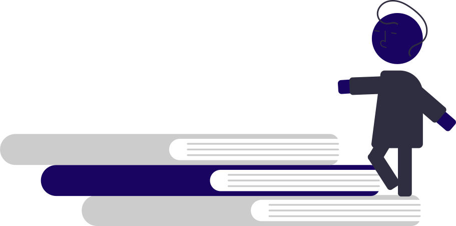

I’m Bhargava Naidu Jaddu. I’m having my B-Tech at ADITYA INSTITUTE OF TECHNOLOGY AND MANAGEMENT
(AITAM) in the steam of computer science engineering at Tekkali. I am a part of developers club in student
activity center in my college and holding the position as a student web developer and currently guiding the juniors as a developers
club domain guide. I’m very much fascinated about the websites and web technology.. So I decided to learn about the technology having
behind it and work under it. So started learning this web developing through SAC. SAC (student activity center) gives us a lot of tasks
which helps in improving our practical skills and knowing the solutions that we face in future software companies.